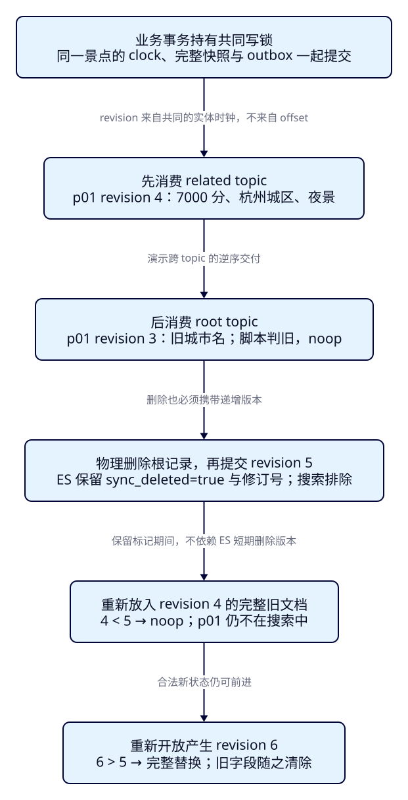
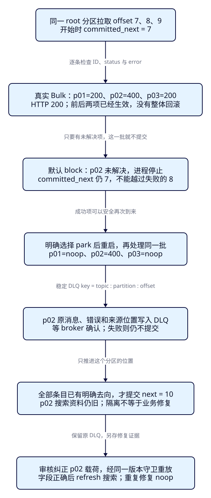

消息重复、乱序或写入失败，
怎样避免旧数据复活？
游船已经涨价、下架，消费者重启后却把旧的60元卡片写了回来；另一批三份文档只有两份写成功，日志仍显示HTTP 200。F39解决了“变化影响谁”，本课解决“哪些状态可以覆盖、失败停在哪里”。完成后，重复投递不会重复改变结果，晚到旧消息不能覆盖新状态，失败记录也有明确的恢复去向。
学完能用输出证明什么
- 重现ES已写而offset未提交的崩溃窗口；用noop、完整字段和分区next位置证明重放安全，解释固定ID为何不够。
- 让related topic的新版本先于root topic到达，验证旧版本被拒绝；删除后重放旧快照仍不可搜索，更高修订号可以重新开放。
- 从真实Bulk条目识别部分成功，区分有限重试、停止和持久隔离；核对失败offset、DLQ确认、修复重放与搜索结果。
本课目录
图解跳转：01 · 修订号与删除保护 · 02 · 失败位置与恢复
1. 一次“处理成功”，其实跨了两个系统
Elasticsearch是旅游搜索的派生视图，Kafka保存变化记录及消费者的位置，数据库保存业务事实。消费一条改价事件时，Java先把搜索文档写入ES，再告诉Kafka“下次从哪里开始”。这两个动作没有共同事务：ES成功之后进程退出，Kafka仍记着旧位置，重启就会再次读到同一条事件。反过来，先提交位置再写ES，进程退出会让尚未完成的更新被越过。
因此本课选择写入得到明确处理结果，再提交位置；允许记录再次到来。在相同事件反复执行时仍得到相同业务状态，称为幂等。固定_id=p01能避免多建一张卡片，却挡不住“先写70元、再写旧65元”：普通index会覆盖同一个ID。完整快照配合单调修订号，才同时处理重复和乱序。增量“价格加500”不能直接套本课做法，重放可能再次加价。
观察窗仍是F07提供的景点搜索：西湖、HZ、200元、3km。浏览器经Java服务访问ES；本课不新增页面控件。卡片能证明价格、删除与恢复；修订号、城市名、标签和提交位置用原始响应核对。Pages只承载本教程。
2. 同一景点需要一把共同的尺子
root topic的offset 4与related topic的offset 0只定位各自分区；不能断言4更“新”。城市、景点、标签还可能分别影响同一个p01，单独的表行版本也不能代表整份文档。本课改为发布完整投影事件：每次事务先按F39的规则找全受影响ID，重算当前城市、价格、标签，再为各景点递增自己的revision。p01与p02的修订号也不互相比较。
为把版本前提做成真实证据，本课增加两张outbox表，即与业务修改一起提交的待发布事件表。projection_clock保存每个景点的修订号；emit在同一事务中递增时钟并保存完整快照，Debezium只捕获两张追加表。root与related是本课按变更来源分开的两条topic，没有采用Debezium的Outbox Event Router变换。这是对F39的有意改造，不能把任意三表原始事件直接冒充本课信封。
所有示例写入者在修改业务行之前取得共同事务锁40040，并在同一事务内发布全部受影响景点。这样本实验的写入被串行化，城市变化与根变化共享同一实体时钟。该协议由本课SQL显式遵守，未用触发器强制任意应用遵守；绕过锁、漏发关联ID、从延迟副本拼快照都会破坏前提。事务失败时业务数据、时钟和outbox一起回滚；时钟行不随根记录物理删除。不能用墙上时钟、抓取时间或跨分区offset替代它。
BEGIN;
SELECT pg_advisory_xact_lock(40040);
UPDATE f40.attraction SET ticket_price_fen=6500 WHERE attraction_id='p01';
SELECT f40.emit('p01','root'); -- p01 revision 2, same transaction as price
COMMIT;这里的revision 2不是ES返回的_version，也不是_seq_no。ES内部版本与序列号描述其自身写入；同一事件重放也可能触发内部写入尝试。本课用_source里的sync_revision表达来源业务次序。前者的乐观并发冲突与后者的“过期事件”须分别处理。

3. 先建立版本前提，再连接搜索观察窗
三个景点仍是p01西湖游船6000分/HZ、p02西湖步道0分/HZ、p03西湖园林3000分/SZ；HZ显示名杭州，SZ苏州，t01为p01的夜游、t02为p02的亲水。首轮outbox有3份revision 1快照。文档包含整数分价格、CNY、open、geo_point及标签；新加sync_revision、sync_deleted、sync_hash。一个主分片、0副本、strict mapping、long价格禁止coerce，显式refresh_interval=-1，所有搜索观察前主动refresh。
独立Compose项目es-framework-f40使用PG17.5、Kafka broker4.0.1、Debezium3.3.1.Final（Connect内含4.1.0）、ES9.4.0/Lucene10.4.0；前三镜像沿用已核验digest。Java继续用Boot4.0.8、JDK25.0.4.1+1、官方ES Java与Rest5 Client9.4.8、Kafka客户端4.0.1；ES内置JVM26.0.1另列。端口PG15440、Kafka29340、Connect18340、ES20440、观察窗18090，故障代理仅占20441。
两业务topic及DLQ各1分区/1副本，delete保留7天；单消费者、每次最多10条。outbox在实验期间不更新或删除，不产生业务d事件或Kafka tombstone。删除是outbox中一条deleted=true的c事件，与F37/F39的d后空值压缩标记不同。初始3条为快照r，其后14条为插入c。
cd projects/travel-search
python3 labs/f40/lab.py init --out /tmp/f40-init
python3 labs/f40/lab.py start --out /tmp/f40-start
cd backend
./mvnw -B -ntp clean package dependency:build-classpath -Dmdep.outputFile=target/f40-classpath.txt
cd ..
backend/mvnw -B -ntp -f labs/f40/pom.xml dependency:build-classpath -Dmdep.outputFile=target/projection-classpath.txt等start成功返回后再prepare或run。init在被忽略的infra/f40/.local创建0700目录和0600随机密码文件；旧目录或卷存在就拒绝覆盖。CDC账户只读取两张outbox并具有复制权限，管理员只执行实验SQL。这里是回环绑定、无ES认证的合成数据环境，Kafka/Connect明文；部署安全沿用F35。没有秘密进入浏览器、URL或提交文件。
展开来源表、投影函数、时钟及追加事件的完整SQL
-- The lab binds cdc_password through psql stdin. Only synthetic lesson data.
CREATE SCHEMA f40;
CREATE TABLE f40.city (city_code text PRIMARY KEY, city_name text NOT NULL);
CREATE TABLE f40.attraction (
attraction_id text PRIMARY KEY CHECK (attraction_id ~ '^p[0-9]{2}$'),
name text NOT NULL, city_code text NOT NULL REFERENCES f40.city,
ticket_price_fen bigint NOT NULL CHECK (ticket_price_fen >= 0),
status text NOT NULL CHECK (status IN ('open','closed')),
latitude double precision NOT NULL, longitude double precision NOT NULL
);
CREATE TABLE f40.attraction_tag (
tag_id text PRIMARY KEY, attraction_id text NOT NULL REFERENCES f40.attraction ON DELETE CASCADE,
tag text NOT NULL, UNIQUE(attraction_id,tag)
);
-- This row survives physical deletion/recreation of the business root.
CREATE TABLE f40.projection_clock (attraction_id text PRIMARY KEY, revision bigint NOT NULL CHECK (revision > 0));
CREATE TABLE f40.root_event (
event_id bigint GENERATED ALWAYS AS IDENTITY PRIMARY KEY,
attraction_id text NOT NULL, revision bigint NOT NULL CHECK (revision > 0),
deleted boolean NOT NULL, document jsonb NOT NULL
);
CREATE TABLE f40.related_event (LIKE f40.root_event INCLUDING ALL);
CREATE FUNCTION f40.project(p_id text) RETURNS jsonb LANGUAGE sql STABLE AS $$
SELECT jsonb_build_object(
'attraction_id',a.attraction_id,'name',a.name,'city_code',a.city_code,'city_name',c.city_name,
'ticket_price_fen',a.ticket_price_fen,'currency','CNY','status',a.status,
'location',jsonb_build_object('lat',a.latitude,'lon',a.longitude),
'tags',COALESCE((SELECT jsonb_agg(t.tag ORDER BY t.tag COLLATE "C")
FROM f40.attraction_tag t WHERE t.attraction_id=a.attraction_id),'[]'::jsonb))
FROM f40.attraction a JOIN f40.city c USING(city_code)
WHERE a.attraction_id=p_id AND a.status='open'
$$;
-- All writers must acquire advisory lock 40040 BEFORE changing business rows,
-- and publish every affected root in that SAME transaction. This is a teaching
-- single-writer contract, not transparent CDC of arbitrary unmodified writers.
CREATE FUNCTION f40.emit(p_id text, p_channel text, p_bad_price boolean DEFAULT false)
RETURNS bigint LANGUAGE plpgsql AS $$
DECLARE v bigint; doc jsonb; gone boolean;
BEGIN
IF p_channel NOT IN ('root','related') THEN RAISE EXCEPTION 'Unexpected channel'; END IF;
INSERT INTO f40.projection_clock VALUES (p_id,1)
ON CONFLICT(attraction_id) DO UPDATE SET revision=f40.projection_clock.revision+1
RETURNING revision INTO v;
doc := f40.project(p_id);
gone := doc IS NULL;
IF gone THEN doc := jsonb_build_object('attraction_id',p_id); END IF;
-- Fault fixture only: a projection bug, while the business column stays bigint.
IF p_bad_price AND NOT gone THEN
doc := jsonb_set(doc,'{ticket_price_fen}','"broken"'::jsonb);
END IF;
doc := doc || jsonb_build_object('sync_revision',v,'sync_deleted',gone);
IF p_channel='root' THEN
INSERT INTO f40.root_event(attraction_id,revision,deleted,document) VALUES(p_id,v,gone,doc);
ELSE
INSERT INTO f40.related_event(attraction_id,revision,deleted,document) VALUES(p_id,v,gone,doc);
END IF;
RETURN v;
END $$;
INSERT INTO f40.city VALUES ('HZ','杭州'),('SZ','苏州');
INSERT INTO f40.attraction VALUES
('p01','西湖 游船','HZ',6000,'open',30.250,120.150),
('p02','西湖 步道','HZ',0,'open',30.251,120.151),
('p03','西湖 园林','SZ',3000,'open',31.320,120.620);
INSERT INTO f40.attraction_tag VALUES ('t01','p01','夜游'),('t02','p02','亲水');
SELECT f40.emit('p01','root'),f40.emit('p02','root'),f40.emit('p03','root');
CREATE ROLE f40_cdc LOGIN REPLICATION PASSWORD :'cdc_password';
GRANT CONNECT ON DATABASE travel_f40 TO f40_cdc;
GRANT USAGE ON SCHEMA f40 TO f40_cdc;
GRANT SELECT ON f40.root_event,f40.related_event TO f40_cdc;
CREATE PUBLICATION f40_publication FOR TABLE f40.root_event,f40.related_event;展开完整mapping、过滤读alias与隔离配置
{
"settings": {
"number_of_shards": 1,
"number_of_replicas": 0,
"refresh_interval": "-1"
},
"mappings": {
"dynamic": "strict",
"properties": {
"attraction_id": {
"type": "keyword"
},
"name": {
"type": "text",
"analyzer": "whitespace"
},
"city_code": {
"type": "keyword"
},
"city_name": {
"type": "keyword"
},
"ticket_price_fen": {
"type": "long",
"coerce": false
},
"currency": {
"type": "keyword"
},
"status": {
"type": "keyword"
},
"location": {
"type": "geo_point"
},
"tags": {
"type": "keyword"
},
"sync_revision": {
"type": "long"
},
"sync_deleted": {
"type": "boolean"
},
"sync_hash": {
"type": "keyword"
}
}
}
}{
"actions": [
{
"add": {
"index": "tut-f40-attractions-v001",
"alias": "tut-f40-attractions-write",
"is_write_index": true
}
},
{
"add": {
"index": "tut-f40-attractions-v001",
"alias": "tut-f40-attractions-read",
"filter": {
"term": {
"sync_deleted": false
}
}
}
}
]
}{
"name": "f40-pg",
"config": {
"connector.class": "io.debezium.connector.postgresql.PostgresConnector",
"tasks.max": "1",
"database.hostname": "postgres",
"database.port": "5432",
"database.user": "f40_cdc",
"database.password": "${file:/run/secrets/cdc-properties:password}",
"database.dbname": "travel_f40",
"topic.prefix": "travel_f40",
"plugin.name": "pgoutput",
"slot.name": "f40_slot",
"slot.drop.on.stop": "false",
"publication.name": "f40_publication",
"publication.autocreate.mode": "disabled",
"table.include.list": "f40.root_event,f40.related_event",
"snapshot.mode": "initial",
"tombstones.on.delete": "true",
"key.converter": "org.apache.kafka.connect.json.JsonConverter",
"key.converter.schemas.enable": "false",
"value.converter": "org.apache.kafka.connect.json.JsonConverter",
"value.converter.schemas.enable": "false",
"poll.interval.ms": "200",
"status.update.interval.ms": "1000"
}
}完整Compose、本机入口与消费者可下载。读写alias都指向tut-f40-attractions-v001；另一个tut-f40-naive-v001只放错误做法的反例，观察窗从不读取它。
4. f40-c01：ES已涨价，消费位置仍停在旧处
手工路径与后面的自动run二选一。先prepare，再消费三条初始快照；inspect只读完整事件及已提交位置，不改变应用组。每一步暂停其他写入，确认事件到齐后再drain。drain只处理启动时看到的末端，不是持续服务。
python3 labs/f40/lab.py prepare --out /tmp/f40-manual
bash labs/f40/java.sh inspect
bash labs/f40/java.sh drain root
python3 labs/f40/lab.py refresh --out /tmp/f40-refresh-initial
python3 labs/f40/lab.py step crash --out /tmp/f40-change
bash labs/f40/java.sh inspect
bash labs/f40/java.sh drain root crash最后一条故意以退出码40直接终止进程。先预测：搜索资料能否已改，而Kafka不知道？实际p01的GET已是6500分/revision 2，root分区的committed_next仍为3；它下一次应处理offset 3。这里故障发生在收到ES成功之后、commitSync之前，未模拟任意时刻断电。
curl --fail-with-body -sS http://127.0.0.1:20440/tut-f40-attractions-v001/_doc/p01
bash labs/f40/java.sh inspect
bash labs/f40/java.sh drain root
bash labs/f40/java.sh replay root
python3 labs/f40/lab.py refresh --out /tmp/f40-refresh-duplicate
python3 labs/f40/lab.py inspect --out /tmp/f40-observe-duplicate重启先重新得到同一事件，脚本返回noop，随后提交next=4。replay从头读取该topic，但不改应用组位置，旧revision 1和相同revision 2都不改变文档。检验的是价格/完整字段/3份可见文档及提交位置，不能只看“没有多出ID”。replay与drain互斥，重放前先停止其他消费者。
5. 判断与替换要在ES的一次更新里完成
如果Java先GET版本再普通index，两个写入之间仍能插入另一个更新。本课把比较和完整替换放进Update API的Painless脚本：低版本noop；同版本且指纹相同noop；同版本不同内容报错；高版本清空旧_source后放入完整新文档。scripted_upsert=true让新ID也经过脚本，空upsert提供初始容器。
if (ctx._source.containsKey('sync_revision')) {
if (params.revision < ctx._source.sync_revision) {
ctx.op = 'noop';
return;
}
if (params.revision == ctx._source.sync_revision) {
if (ctx._source.sync_hash != params.document.sync_hash) {
throw new IllegalArgumentException('same revision with different payload');
}
ctx.op = 'noop';
return;
}
}
ctx._source.clear();
ctx._source.putAll(params.document);指纹是Java对不可变outbox中原始document字符串计算的SHA-256；只检测“同版本却换了载荷”，不是签名或字段语义标准化。同值不同空白也会得到不同指纹，所以正常重放必须保留原始载荷，不重新序列化它。修复已失败的记录可以更正载荷，但须核对该版本未成功写入；若同版本已落库却内容不同，应停止调查，不把差异冒充重复。
等c01完成后，可用同一revision 2样本直接重放REST。正文文件包含完整脚本、参数、指纹与upsert，不依赖前端生成；用最终更高版本重放同样只会noop。
curl --fail-with-body -sS -X POST 'http://127.0.0.1:20440/tut-f40-attractions-write/_update/p01?require_alias=true&retry_on_conflict=3' -H 'Content-Type: application/json' --data-binary @search/f40/guard-example.json展开REST的完整请求体
{
"scripted_upsert": true,
"script": {
"lang": "painless",
"source": "if (ctx._source.containsKey('sync_revision')) {\n if (params.revision < ctx._source.sync_revision) {\n ctx.op = 'noop';\n return;\n }\n if (params.revision == ctx._source.sync_revision) {\n if (ctx._source.sync_hash != params.document.sync_hash) {\n throw new IllegalArgumentException('same revision with different payload');\n }\n ctx.op = 'noop';\n return;\n }\n}\nctx._source.clear();\nctx._source.putAll(params.document);\n",
"params": {
"revision": 2,
"document": {
"name": "西湖 游船",
"tags": [
"夜游"
],
"status": "open",
"currency": "CNY",
"location": {
"lat": 30.25,
"lon": 120.15
},
"city_code": "HZ",
"city_name": "杭州",
"sync_deleted": false,
"attraction_id": "p01",
"sync_revision": 2,
"ticket_price_fen": 6500,
"sync_hash": "01a4934b5f4fb18f5e653481d9931dbda055e7f003834160d2c06e5612e88bf2"
}
}
},
"upsert": {}
}Java在Bulk的update动作中采用同一脚本、scriptedUpsert和空upsert；requireAlias拒绝误写普通索引。retryOnConflict(3)处理ES内部的并发更新冲突，不能用来判断来源事件新旧。脚本判旧返回200/noop；真正的409只是本次乐观并发未完成，不能无条件当作过期成功。官方语义见Update API与Bulk API；本课在9.4.0实际核对。
6. f40-c02：让新topic先到，旧topic后到
先把p01价格改成7000分并发布root revision 3；再把HZ改名杭州城区、t01改夜景，发布related中的p01 revision 4及p02 revision 2。第二个事务同时覆盖共享城市影响的两个景点。两个topic由消费者刻意分开处理，顺序不能替代事件里的版本。
BEGIN;
SELECT pg_advisory_xact_lock(40040);
UPDATE f40.attraction SET ticket_price_fen=7000 WHERE attraction_id='p01';
SELECT f40.emit('p01','root'); -- revision 3, deliberately consumed later
COMMIT;
BEGIN;
SELECT pg_advisory_xact_lock(40040);
UPDATE f40.city SET city_name='杭州城区' WHERE city_code='HZ';
UPDATE f40.attraction_tag SET tag='夜景' WHERE tag_id='t01';
SELECT f40.emit('p01','related'),f40.emit('p02','related'); -- revisions 4 and 2
COMMIT;python3 labs/f40/lab.py step reorder --out /tmp/f40-reorder
bash labs/f40/java.sh inspect
bash labs/f40/java.sh drain related
bash labs/f40/java.sh drain root
python3 labs/f40/lab.py refresh --out /tmp/f40-refresh-reorder
python3 labs/f40/lab.py inspect --out /tmp/f40-observe-reorder实际先到的related offset 0把p01写成revision 4：7000分、杭州城区、[夜景]。后到的root offset 4携带revision 3，结果noop，仍提交该记录的next=5。用offset比较会选错方向。完整快照也很关键：若revision 4只含标签，高版本覆盖后可能丢价格；若合并补丁又忽略revision 3，缺失的价格更新也不会自动补回。本课事件必须已经包括截至该修订号的全部字段。
自动案例另把revision 4、revision 2依次普通index到反例索引同一p01，GET退回6500分。它不使用保护脚本，用来证明固定ID只解决重复建文档。
7. 删除后要记住“这个ID已走到哪一版”
物理删掉p01的业务行和级联标签，仍在同一事务emit revision 5；保留下来的clock不重置。ES写入最小文档：attraction_id、sync_revision=5、sync_deleted=true以及指纹，旧name、price、tags被完整清除。读alias用term sync_deleted=false过滤，搜索不再返回p01；之后重放related revision 4仍noop。
BEGIN;
SELECT pg_advisory_xact_lock(40040);
DELETE FROM f40.attraction WHERE attraction_id='p01';
SELECT f40.emit('p01','root'); -- revision 5; clock is retained, document is a delete marker
COMMIT;python3 labs/f40/lab.py step delete --out /tmp/f40-delete
bash labs/f40/java.sh inspect
bash labs/f40/java.sh drain root
bash labs/f40/java.sh replay related
python3 labs/f40/lab.py refresh --out /tmp/f40-refresh-delete
python3 labs/f40/lab.py inspect --out /tmp/f40-observe-delete
python3 labs/f40/lab.py step reopen --out /tmp/f40-reopen
bash labs/f40/java.sh inspect
bash labs/f40/java.sh drain root
python3 labs/f40/lab.py refresh --out /tmp/f40-refresh-reopen重开使用相同p01，但价格7200分、空标签和revision 6，6大于5，搜索可以重新出现。若业务重新从1编号，合法新记录反而会一直被旧删除标记挡住。自动反例还直接DELETE反例索引的p01，再普通index旧revision 4，文档真实复活；受保护索引没有这个结果。
GET /tut-f40-attractions-read/_doc/p01仍能读出删除标记，这点已实测。它不是权限边界；本课搜索接口使用Query DSL经过alias过滤。若另建详情GET入口，应显式检查sync_deleted。原索引原始计数也会把标记算入，不能当成游客可见计数。为何不用外部version配合DELETE就结束？外部版本适合来源可比较版本，但ES对物理删除的版本保留受index.gc_deletes等条件约束，不能据此承诺任意历史重放都安全。本课保留的是普通文档中的业务删除标记，只要文档和clock仍在、所有写入都经过守卫，旧事件就被挡住。清标记、清clock、恢复旧备份或重建索引都需要另行证明可重放范围，不能用“Kafka保留7天”自行宣布可以删除保护。依据见Delete API版本说明及下文固定版本源码。
8. f40-c03：HTTP 200，三条中间一条失败
把p01改7500分、p02改1000分、p03改3200分；故意让投影错误把p02价格序列化为字符串broken。业务列仍是bigint，错误发生在搜索投影边界；strict long且coerce=false真实拒绝它。三条事件在同一root分区offset 7、8、9，应用组初始next=7。
BEGIN;
SELECT pg_advisory_xact_lock(40040);
UPDATE f40.attraction SET ticket_price_fen=7500 WHERE attraction_id='p01';
UPDATE f40.attraction SET ticket_price_fen=1000 WHERE attraction_id='p02';
UPDATE f40.attraction SET ticket_price_fen=3200 WHERE attraction_id='p03';
SELECT f40.emit('p01','root'); -- revision 7, real success
SELECT f40.emit('p02','root',true); -- revision 3, deliberate mapping failure
SELECT f40.emit('p03','root'); -- revision 2, real success after the failed record
COMMIT;python3 labs/f40/lab.py step partial --out /tmp/f40-partial
bash labs/f40/java.sh inspect
bash labs/f40/java.sh drain root
bash labs/f40/java.sh inspectdrain预期退出1。真实ES的Bulk响应为HTTP 200，三个item分别200、400、200；p01与p03已经更新，p02仍旧。Bulk没有整体回滚，不能重试前假定全失败。当前分区整批未解决，所以不提交9或10，committed_next仍7；已成功的offset 9也不能越过未解决的8。重启会重复处理成功项，由版本脚本返回noop。

关键Java如下。它逐条关联ID、状态和错误；正常结果或noop完成该项，暂时失败仅放回失败子集，已确认的映射数据400在明确park策略下才进入DLQ。请求级IO可能结果未知，重试整个未确认请求；任何未解决项都阻止这一批提交。不是看response.errors一个布尔值就跳过全部细节。
static boolean transientStatus(int status) { return List.of(409,429,502,503,504).contains(status); }
static void backoff(int attempt) throws InterruptedException {
long ms=Math.min(1600,200L<<(attempt-1))+ThreadLocalRandom.current().nextLong(151);
log(Map.of("kind","backoff","attempt",attempt,"milliseconds",ms)); Thread.sleep(ms);
}
static void apply(ElasticsearchClient es,KafkaProducer<String,String> producer,
List<ConsumerRecord<String,String>> records,boolean allowPark) throws Exception {
var pending=new ArrayList<Event>();
for(var r:records) {
try { pending.add(parse(r)); }
catch(IllegalArgumentException e) {
if(!allowPark) throw e;
park(producer,r,"validation: "+e.getMessage());
}
}
for(int attempt=1;!pending.isEmpty() && attempt<=ATTEMPTS;attempt++) {
var bulk=new BulkRequest.Builder().requireAlias(true);
for(var event:pending) bulk.operations(o->o.update(u->u.index(WRITE).id(event.id()).retryOnConflict(3)
.action(a->a.script(s->s.lang("painless").source(v->v.scriptString(SCRIPT))
.params("revision",JsonData.of(event.revision())).params("document",event.document()))
.scriptedUpsert(true).upsert(JsonData.fromJson("{}")))));
var retry=new ArrayList<Event>(); var blocked=new ArrayList<String>();
try {
var response=es.bulk(bulk.build());
if(response.items().size()!=pending.size()) throw new IllegalStateException("Bulk item count mismatch");
for(int i=0;i<pending.size();i++) {
var event=pending.get(i); var item=response.items().get(i);
if(!event.id().equals(item.id())) throw new IllegalStateException("Bulk item ID mismatch");
String reason=item.error()==null ? "" : item.error().toString();
log(Map.of("kind","item","origin",origin(event.record()),"id",event.id(),"revision",event.revision(),
"attempt",attempt,"status",item.status(),"result",item.result()==null?"":item.result(),"error",reason));
if(item.error()==null && item.status()<300) continue;
if(transientStatus(item.status())) retry.add(event);
else if(item.status()==400 && allowPark && item.error()!=null
&& List.of("document_parsing_exception","mapper_parsing_exception").contains(item.error().type()))
park(producer,event.record(),reason);
else blocked.add(event.id()+" status="+item.status());
}
} catch(ElasticsearchException e) {
if(!transientStatus(e.status())) throw e;
retry.addAll(pending); log(Map.of("kind","request_retry","attempt",attempt,"status",e.status()));
} catch(IOException e) {
// The request might have been applied before its acknowledgement was lost.
retry.addAll(pending); log(Map.of("kind","request_retry","attempt",attempt,"status","io_unknown_outcome"));
}
if(!blocked.isEmpty()) throw new IllegalStateException("Unresolved items; no batch commit: "+blocked);
pending=retry;
if(!pending.isEmpty()) {
if(attempt==ATTEMPTS) throw new IllegalStateException("Retry budget exhausted; no batch commit");
backoff(attempt);
}
}
}9. 隔离要先持久保存，提交不代表已修复
默认block适合先停住调查；这里显式改为park，允许后续数据继续。DLQ是失败记录的持久隔离队列，保存来源topic/partition/offset、原key/value、错误与pending状态；它没有自动让搜索数据正确。生产者使用acks=all、幂等生产并等待send.get成功，之后才允许这一批提交。DLQ写失败时仍停在原处。
static void park(KafkaProducer<String,String> producer,ConsumerRecord<String,String> r,String reason) throws Exception {
String key=r.topic()+":"+r.partition()+":"+r.offset();
var value=new LinkedHashMap<String,Object>();
value.put("origin",origin(r)); value.put("key",r.key()); value.put("value",r.value());
value.put("reason",reason); value.put("resolution","pending");
var ack=producer.send(new ProducerRecord<>(DLQ,key,JSON.writeValueAsString(value))).get();
log(Map.of("kind","parked","origin",origin(r),"dlq_key",key,"dlq_partition",ack.partition(),"dlq_offset",ack.offset()));
}bash labs/f40/java.sh drain root park
bash labs/f40/java.sh dlq
python3 labs/f40/lab.py refresh --out /tmp/f40-refresh-parked
python3 labs/f40/lab.py repair-file --out /tmp/f40-repair
bash labs/f40/java.sh repair /tmp/f40-repair/reviewed-repair.json
bash labs/f40/java.sh repair /tmp/f40-repair/reviewed-repair.json
python3 labs/f40/lab.py refresh --out /tmp/f40-refresh-repaired
python3 labs/f40/lab.py inspect --out /tmp/f40-observe-repaired第二次处理三项为noop、400、noop；p02失败写入DLQ offset 0，key为travel_f40.f40.root_event:0:8，root next才推进10。此时观察窗仍显示p02为0元，而数据库已10元：位置追平和业务正确是两个判断。repair-file只处理本课这一条已审核的p02/revision 3故障，核对来源clock仍3，从权威投影纠正价格字符串，保留原位置和修复说明；若来源已有新版本，拒绝把当前状态冒充旧revision 3。
repair通过同一脚本写入后，p02成为1000分/revision 3；再次修复noop。修复不回退或修改应用组offset，原DLQ不删除、不改写，结果证据另存；后续若已有revision 4，旧修复3也只能noop。若已成功应用的同版本载荷被改动，指纹冲突会失败，须调查或由来源发布新的修订号。本课不是通用自动修复服务。
DLQ确认与消费提交之间也有崩溃窗口：再次处理可能产生重复隔离记录，所以用来源位置做稳定业务键；acks=all与生产幂等不提供跨进程、跨ES/Kafka的恰好一次。消费者只在同一分区的整批都已应用、noop或持久隔离后提交last.offset+1；保留leaderEpoch，避免直接把poll已拉取的位置当作完成位置。Kafka的含义见手工offset控制。
apply(es,producer,records,policy.equals("park"));
if(policy.equals("crash")) {
log(Map.of("kind","crash_window","written",records.size(),"committed",false));
Runtime.getRuntime().halt(40); // Intentional abrupt exit after ES, before Kafka commit.
}
if(!replay) {
var last=records.getLast();long next=last.offset()+1;
consumer.commitSync(Map.of(tp,new OffsetAndMetadata(next,last.leaderEpoch(),"f40-resolved-batch")));
log(Map.of("kind","commit","topic",tp.topic(),"partition",tp.partition(),"next",next));
}10. f40-c04：暂时失败、服务不可用与“没收到确认”
400映射错误用相同请求重试通常不会变好；429拒绝、内部冲突或短暂网关/服务错误可以有限重试。此实现至多4次应用层尝试，前三次等待200/400/800毫秒基数加0–150毫秒抖动，耗尽即退出且不提交；ES内部retry_on_conflict和传输层重试单独理解，4不等于网络请求必然恰好4次。401/403、别名/配置错误和未知错误停止调查，不归入数据DLQ。
| 安排 | 本课实际注入或操作 | 判断证据与恢复 |
|---|---|---|
| 条级429 | 真实转发p01 v8，暂扣p02 v4并返回合成429 | 首批p01=200/p02=429；第二次只含p02=200，两份字段正确 |
| 请求级429 | 回环代理在转发前持续返回合成429 | 预算耗尽、root next停12；关闭注入后原位重放v9/7900分 |
| ES不可用 | 真正停止本课ES容器，数据库/Kafka继续运行 | 连接失败、next停13；原卷启动健康后重放v10/8000分 |
| 写入确认丢失 | 代理先转发ES真实写入，再关闭响应连接一次 | 第一次写入已生效；后续尝试noop，v11/8100分，最终提交15 |
前两种429是可控故障注入，不代表压满真实ES线程池；丢确认也是明确代理断连，不能宣称已验证所有网络故障。映射400、部分成功与停止ES是真实行为。完整代理保留原始请求结果与转发条目数，证据和消费者应用日志分开记录。自动run顺序覆盖上述四种，读者只需看这些状态与恢复，不必掌握验收工具。
最终root有15条、related有2条，committed_next各15与2，不能相互比较。再次drain为0条；完整投影p01 v11/8100、p02 v4/1200、p03 v2/3200。观察窗只显示杭州的p01 81元、p02 12元；p03在苏州，须完整字段查询核对。显式refresh才证明搜索可见，commit成功不能替代它。
11. 清理重做，证明的是可恢复范围
python3 labs/f40/lab.py run --out /tmp/f40-round1
python3 labs/f40/lab.py cleanup --out /tmp/f40-cleanup1
python3 labs/f40/lab.py run --out /tmp/f40-round2
python3 labs/f40/lab.py cleanup --out /tmp/f40-cleanup2
python3 labs/f40/lab.py down --out /tmp/f40-downrun会临时启动自己的18090观察窗及20441代理，端口须空闲。手工观察时另开JDK25终端，用下面命令启动已有展示壳，完成后先停掉它再run；从浏览器打开本机观察窗。
ES_URL=http://127.0.0.1:20440 ES_INDEX=tut-f40-attractions-read ES_CA_FILE= ES_API_KEY_FILE= APP_PORT=18090 java -Xms64m -Xmx192m -jar backend/target/travel-search-0.7.0.jarcleanup检查本课集群、topic白名单及无活动应用组；先停止连接器、清其来源位置，再删本课schema/publication/slot/CDC账户、两业务topic/DLQ/应用组和两份点名索引及alias。它会删除失败审计队列，只能在已保存证据的教学环境重做；不只删索引而保留消费位置。具名卷、Connect内部topic及.local秘密保留，down不带-v；其他项目不动。
本课限单VM、单broker、每topic单分区、单消费者、稳定业务ID、配合版本协议的串行写入者。没有证明任意崩溃、Kafka/DLQ故障、HA、rebalance下的并行处理、跨集群回放或大规模吞吐；也没有让多份文档的Bulk具备原子性。F41会回答持续改价时新索引怎样追平再切alias；F42继续处理延迟、对账和补偿。一次reindex或清空保护标记无法替代这些条件。
依据、实际验收与固定版本源码入口
- ES9.4.0 UpdateHelper.prepareUpsert / prepareUpdateScriptRequest：scripted upsert、脚本结果到noop/索引动作；本地目标源码已核对。
- ES9.4.0 IndexSettings.INDEX_GC_DELETES_SETTING与InternalEngine.resolveDocVersion：物理删除版本的时限条件，不是永久业务删除标记。
- Debezium3.3 PG连接器：快照与变更信封；本课版本策略来自显式outbox协议，不是连接器自动赋予。
- 真实两轮执行与限制、内容/图生成/HTTP/视觉记录各自验收。截图不能代替字段、位置和恢复证据；固定课次提交见当前页面的GitHub历史。
独立能力检查
先用自己的话回答，再对照本课真实输出；不要只复述命令。
1. root offset 4与related offset 0都改p01，哪个应当获胜？
offset不可跨分区比较。此样本related携带revision 4，root携带3，所以先写4之后3 noop。还须保证4是完整、与版本一致的投影快照。
2. ES已写6500分，root next仍3，重启从哪里恢复？
从offset 3重读revision 2，载荷指纹相同则noop，再提交next 4。先提交位置再写ES会有漏更新窗口；本课选择允许重复并保护重放。
3. 为什么固定_id、doc_as_upsert和retry_on_conflict都不能单独解决旧消息覆盖？
固定ID与upsert决定写到哪里或是否创建；内部冲突重试决定如何完成ES更新。它们均不建立来源业务次序，必须由可比较的实体修订号及原子守卫判旧。
4. p01删除后GET仍200，为什么不是验收失败？
本方案保留revision 5删除标记，原索引与alias按ID GET均可读到它。DSL搜索通过sync_deleted=false过滤，不应出现p01。不能把过滤alias当访问控制。
5. offset 7、8、9的Bulk结果200、400、200，能提交next 10吗？
默认不行。offset 8未解决，即使9已生效也不能越过，next仍7。显式park并等失败记录持久写入DLQ后才可提交10；这时业务数据仍可能旧。
6. 修复文件把p02 revision 3改正确，后来已有revision 4，怎样重放？
仍通过同一守卫，3低于4返回noop，不覆盖新状态。不能给旧内容随手贴更高版本；须由权威来源发布一致的新修订号。已成功同版本异载荷会被指纹拒绝。
7. HTTP超时是否证明ES没有写？429耗尽是否自动写DLQ？
超时或断连可能发生在ES已写而确认未到，不能判定未写。重试未确认请求依靠版本保护。暂时失败耗尽会停住不提交，不自动当坏数据隔离；已确认的映射数据400才允许显式park。
8. 只清ES索引再重启消费者，能从头恢复吗？
不能保证。应用组可能已提交到末端，旧记录不会自动再来；删除保护也已丢失。教学重做需协调清理本课来源/事件/位置/索引，在线重建则需要F41的追平协议。
实际陷阱
速记
| 问题 | 本课动作 | 证据与条件 |
|---|---|---|
| 写后崩溃 | ES先写，Kafka后提交 | v2已写/next仍3，重放noop再next 4 |
| 跨topic乱序 | 共同实体revision＋完整快照 | v4先到，v3后到noop；offset不可跨分区比较 |
| 旧数据复活 | 最小删除标记＋时钟保留 | v5挡v4；DSL过滤，GET仍可见标记 |
| 合法重新开放 | 新revision继续递增 | v6覆盖v5；不从1重置 |
| 部分失败 | 逐条判断；同分区批次不越过 | 200/400/200，未隔离时next仍7 |
| 永久数据失败 | 默认停止；明确park并等待DLQ确认 | 隔离后next 10；p02仍0元，修复后10元 |
| 暂时失败/未知结果 | 有限退避，失败子集或未确认请求重试 | 429、停止ES、丢确认；耗尽不提交 |
| 最终完整性 | 按实体查版本/字段，再refresh搜索 | p01/v11/8100、p02/v4/1200、p03/v2/3200 |
本课心法：允许再来，拒绝倒退；位置只越过有明确去向的记录，业务正确还要另行核对。